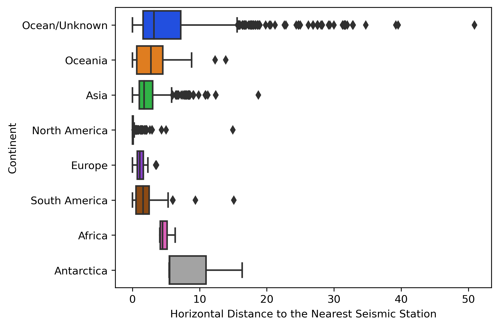

Static graphs
The below graph shows the relationship between the MMI of the earthquake and the Magnitude of the earthquake. Along the top and right axes, the distributions of the functions are shown and the colour coordination here informs you about wether or not a tsunami resulted from the event. What we found interesting is that there were some earthquakes that measured as high as 7 and above that did not produce a tsunami and produced minimal mmi or surface damage. This implies that although the earthquake did not originate on land, it did not produce a tsunami. This may be the result of the eartquake originating deep below the ocean's surface. We found this very cool and thought more investigation should follow.

The second of our static graphs shows the relationship between the depth of the origin of the event and the number of seismic stations that recorded the event. The colours on the graph indicate where the event occured. Here, we can see that even though some of the events happen as deep as nearly 700 kilometers underground, there are still often detected by a large number of stations. This gaurentees accuracy with regard to the location of the event, which can help government agencies respond to the events in a timely manner.

Our third and final box plot illustrates the location of the events and shows how close the nearest seismic station is. Looking through the graph, we would expect the large distances between events and the stations in the ocean, which is exactly what we see. From the graph we would speculate that the realationship here can possibly be explained by the frequency of the events that occur and also by the ability of the continent to invest in the seismic stations. This can be seen by the fact that Africa has the largest minimum distance with a compact distribution around it, considering our above hypothesis, we know from the data that 1) Africa has the least number of events that occur and 2) is widely considered to be the poorest continent. Looking at Asia, we believe that this could further serve to bolster our hypothesis. The distribution around Asia is large this can be due to the fact that within Asia, there exist large financial discrepencies. For example, Japan and the Philippines. If we look at the first of our interactive graphs, we can see that these countries were host to a large number of events, this in combination of with their compact territories, would imply that the neirest seismic station would likely not be far away from an event (unless the country could not afford to invest in these stations). The outliers may be explained by places such as Russia, which had significantly fewer events than another areas. This, coupled with it's large land mass might imply seismic stations that are few and far between.
